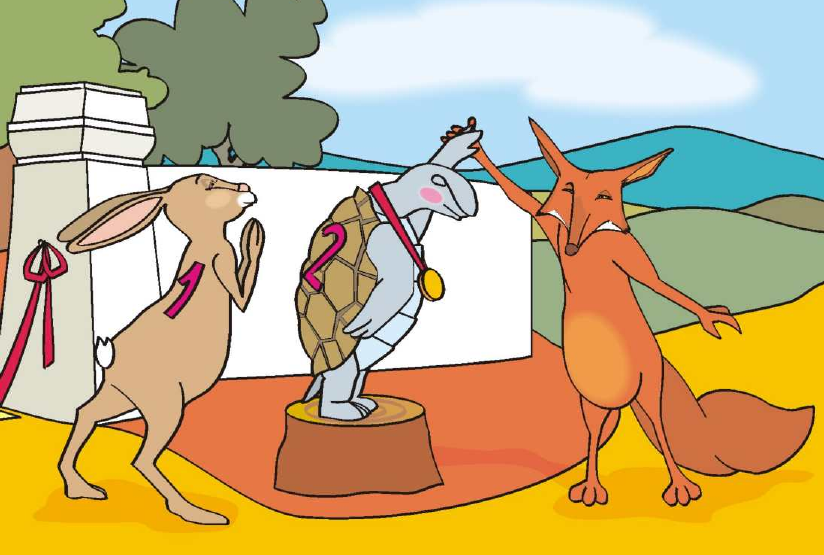
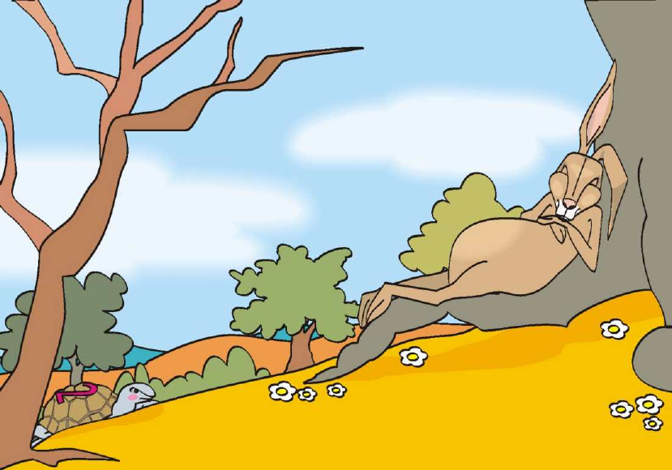
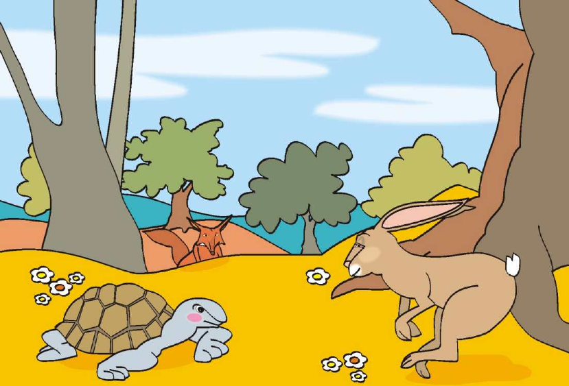

La Liebre
Veloz y presumida
Fabula de Esopo
Cuando la liebre despertó, ya era demasiado tarde. La tortuga cruzó la meta entre los aplausos de todos los animales del bosque.
La liebre corrió con toda su fuerza, pero no pudo alcanzarla. La tortuga había ganado.
Avergonzada, la liebre comprendió: "La constancia vence al orgullo."

La tortuga cruza la meta.

Lento pero constante gana la carrera

Capitulo IV
Mientras la liebre roncaba, la tortuga siguió su camino sin descanso alguno.
Un paso, y otro, y otro más. Sin prisa pero sin pausa.
Con determinación, pasó junto a la liebre dormida y siguió adelante, sin mirar atrás.
Capitulo III
La liebre corrió tan rápido que pronto dejó a la tortuga muy atrás.
Confiada en su enorme ventaja, decidió descansar bajo la sombra de un árbol.
"Tengo tiempo de sobra", pensó. "Esa tortuga jamás podrá alcanzarme."
Y así, entre la brisa, la liebre cerró los ojos y se quedó profundamente dormida.
En un soleado día, la orgullosa liebre se cruzó con la tortuga y empezó a reírse de ella.
"¿Para qué caminas si nunca llegarás a ningún lado?", le dijo entre carcajadas.
La tortuga respondió con calma: "Te reto a una carrera. Veremos quién llega primero."
La liebre, confiada, aceptó sin pensarlo dos veces.
Capitulo II
Veloz y presumida
Pasa el cursorEra la más rápida del bosque. Siempre ganaba y se burlaba de todos.
Lenta pero constante
Pasa el cursorEra tranquila y perseverante. Nunca se rendía, avanzaba paso a paso.

Capitulo I
Los Personajes
Veloz y presumida
Constante y paciente